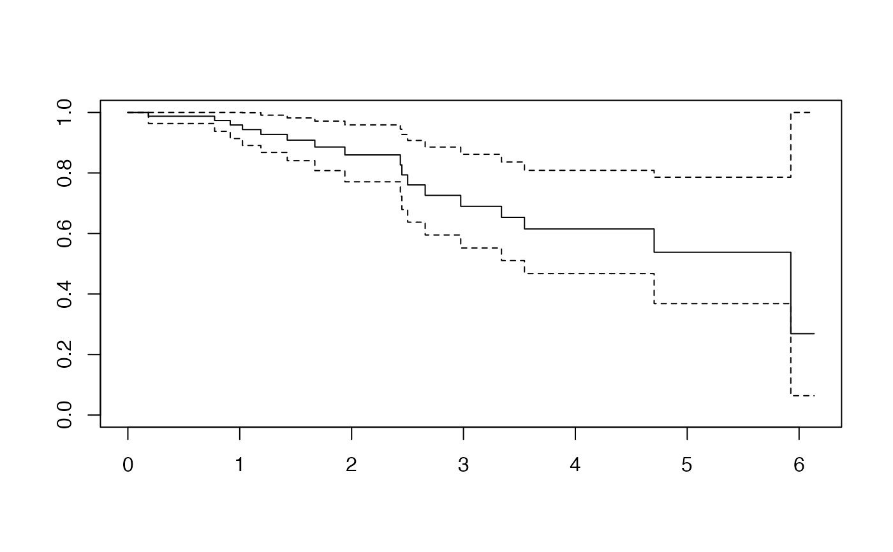

This function computes the Residuals for a Cox-Model fitted with an intercept as the only explanatory variable. Default behaviour gives the Deviance residuals.
Usage
DR_coxph(
time,
time2,
event,
type,
origin,
typeres = "deviance",
collapse,
weighted,
scaleY = TRUE,
plot = FALSE,
...
)Arguments
- time
for right censored data, this is the follow up time. For interval data, the first argument is the starting time for the interval.
- time2
The status indicator, normally 0=alive, 1=dead. Other choices are
TRUE/FALSE(TRUE= death) or 1/2 (2=death). For interval censored data, the status indicator is 0=right censored, 1=event attime, 2=left censored, 3=interval censored. Although unusual, the event indicator can be omitted, in which case all subjects are assumed to have an event.- event
ending time of the interval for interval censored or counting process data only. Intervals are assumed to be open on the left and closed on the right,
(start, end]. For counting process data, event indicates whether an event occurred at the end of the interval.- type
character string specifying the type of censoring. Possible values are
"right","left","counting","interval", or"interval2". The default is"right"or"counting"depending on whether thetime2argument is absent or present, respectively.- origin
for counting process data, the hazard function origin. This option was intended to be used in conjunction with a model containing time dependent strata in order to align the subjects properly when they cross over from one strata to another, but it has rarely proven useful.
- typeres
character string indicating the type of residual desired. Possible values are
"martingale","deviance","score","schoenfeld","dfbeta","dfbetas", and"scaledsch". Only enough of the string to determine a unique match is required.- collapse
vector indicating which rows to collapse (sum) over. In time-dependent models more than one row data can pertain to a single individual. If there were 4 individuals represented by 3, 1, 2 and 4 rows of data respectively, then
collapse=c(1,1,1,2,3,3,4,4,4,4)could be used to obtain per subject rather than per observation residuals.- weighted
if
TRUEand the model was fit with case weights, then the weighted residuals are returned.- scaleY
Should the
timevalues be standardized ?- plot
Should the survival function be plotted ?)
- ...
Arguments to be passed on to
survival::coxph.
References
plsRcox, Cox-Models in a high dimensional setting in R, Frederic
Bertrand, Philippe Bastien, Nicolas Meyer and Myriam Maumy-Bertrand (2014).
Proceedings of User2014!, Los Angeles, page 152.
Deviance residuals-based sparse PLS and sparse kernel PLS regression for censored data, Philippe Bastien, Frederic Bertrand, Nicolas Meyer and Myriam Maumy-Bertrand (2015), Bioinformatics, 31(3):397-404, doi:10.1093/bioinformatics/btu660.
Author
Frédéric Bertrand
frederic.bertrand@lecnam.net
https://fbertran.github.io/homepage/
Examples
data(micro.censure)
Y_train_micro <- micro.censure$survyear[1:80]
C_train_micro <- micro.censure$DC[1:80]
DR_coxph(Y_train_micro,C_train_micro,plot=TRUE)

#> 1 2 3 4 5 6
#> -1.48432960 -0.54695398 -0.23145502 -0.34003013 -0.97633722 -0.38667660
#> 7 8 9 10 11 12
#> -0.38667660 1.57418914 -0.54695398 -0.15811388 2.10405254 -0.23145502
#> 13 14 15 16 17 18
#> -0.38667660 -1.09692040 -0.15811388 -0.15811388 -0.54695398 -0.38667660
#> 19 20 21 22 23 24
#> 0.65978609 -1.09692040 -0.43627414 -0.28961087 -0.38667660 -0.97633722
#> 25 26 27 28 29 30
#> -1.09692040 -0.15811388 -0.43627414 -0.43627414 -0.38667660 -0.23145502
#> 31 32 33 34 35 36
#> 2.30072697 -0.49023986 -0.54695398 -0.73444882 1.31082939 -0.97633722
#> 37 38 39 40 41 42
#> 1.70134282 -0.54695398 -0.15811388 1.07714870 -0.15811388 -0.49023986
#> 43 44 45 46 47 48
#> -0.34003013 -0.97633722 -0.15811388 -0.91410465 -1.09692040 -0.43627414
#> 49 50 51 52 53 54
#> -0.38667660 -0.09836581 -0.79392956 0.46851068 -0.34003013 1.95366297
#> 55 56 57 58 59 60
#> 2.60558118 -0.54695398 -1.09692040 -0.15811388 -0.49023986 -0.97633722
#> 61 62 63 64 65 66
#> -0.28961087 1.44879795 1.82660327 -0.38667660 0.96936094 -0.15811388
#> 67 68 69 70 71 72
#> -0.43627414 -0.49023986 1.18850436 -0.97633722 -0.97633722 0.86322194
#> 73 74 75 76 77 78
#> -0.43627414 -0.49023986 -0.38667660 0.76231394 -0.97633722 -0.43627414
#> 79 80
#> -0.54695398 -0.43627414
DR_coxph(Y_train_micro,C_train_micro,scaleY=FALSE,plot=TRUE)
#> 1 2 3 4 5 6
#> -1.48432960 -0.54695398 -0.23145502 -0.34003013 -0.97633722 -0.38667660
#> 7 8 9 10 11 12
#> -0.38667660 1.57418914 -0.54695398 -0.15811388 2.10405254 -0.23145502
#> 13 14 15 16 17 18
#> -0.38667660 -1.09692040 -0.15811388 -0.15811388 -0.54695398 -0.38667660
#> 19 20 21 22 23 24
#> 0.65978609 -1.09692040 -0.43627414 -0.28961087 -0.38667660 -0.97633722
#> 25 26 27 28 29 30
#> -1.09692040 -0.15811388 -0.43627414 -0.43627414 -0.38667660 -0.23145502
#> 31 32 33 34 35 36
#> 2.30072697 -0.49023986 -0.54695398 -0.73444882 1.31082939 -0.97633722
#> 37 38 39 40 41 42
#> 1.70134282 -0.54695398 -0.15811388 1.07714870 -0.15811388 -0.49023986
#> 43 44 45 46 47 48
#> -0.34003013 -0.97633722 -0.15811388 -0.91410465 -1.09692040 -0.43627414
#> 49 50 51 52 53 54
#> -0.38667660 -0.09836581 -0.79392956 0.46851068 -0.34003013 1.95366297
#> 55 56 57 58 59 60
#> 2.60558118 -0.54695398 -1.09692040 -0.15811388 -0.49023986 -0.97633722
#> 61 62 63 64 65 66
#> -0.28961087 1.44879795 1.82660327 -0.38667660 0.96936094 -0.15811388
#> 67 68 69 70 71 72
#> -0.43627414 -0.49023986 1.18850436 -0.97633722 -0.97633722 0.86322194
#> 73 74 75 76 77 78
#> -0.43627414 -0.49023986 -0.38667660 0.76231394 -0.97633722 -0.43627414
#> 79 80
#> -0.54695398 -0.43627414
DR_coxph(Y_train_micro,C_train_micro,scaleY=TRUE,plot=TRUE)
#> 1 2 3 4 5 6
#> -1.48432960 -0.54695398 -0.23145502 -0.34003013 -0.97633722 -0.38667660
#> 7 8 9 10 11 12
#> -0.38667660 1.57418914 -0.54695398 -0.15811388 2.10405254 -0.23145502
#> 13 14 15 16 17 18
#> -0.38667660 -1.09692040 -0.15811388 -0.15811388 -0.54695398 -0.38667660
#> 19 20 21 22 23 24
#> 0.65978609 -1.09692040 -0.43627414 -0.28961087 -0.38667660 -0.97633722
#> 25 26 27 28 29 30
#> -1.09692040 -0.15811388 -0.43627414 -0.43627414 -0.38667660 -0.23145502
#> 31 32 33 34 35 36
#> 2.30072697 -0.49023986 -0.54695398 -0.73444882 1.31082939 -0.97633722
#> 37 38 39 40 41 42
#> 1.70134282 -0.54695398 -0.15811388 1.07714870 -0.15811388 -0.49023986
#> 43 44 45 46 47 48
#> -0.34003013 -0.97633722 -0.15811388 -0.91410465 -1.09692040 -0.43627414
#> 49 50 51 52 53 54
#> -0.38667660 -0.09836581 -0.79392956 0.46851068 -0.34003013 1.95366297
#> 55 56 57 58 59 60
#> 2.60558118 -0.54695398 -1.09692040 -0.15811388 -0.49023986 -0.97633722
#> 61 62 63 64 65 66
#> -0.28961087 1.44879795 1.82660327 -0.38667660 0.96936094 -0.15811388
#> 67 68 69 70 71 72
#> -0.43627414 -0.49023986 1.18850436 -0.97633722 -0.97633722 0.86322194
#> 73 74 75 76 77 78
#> -0.43627414 -0.49023986 -0.38667660 0.76231394 -0.97633722 -0.43627414
#> 79 80
#> -0.54695398 -0.43627414
rm(Y_train_micro,C_train_micro)